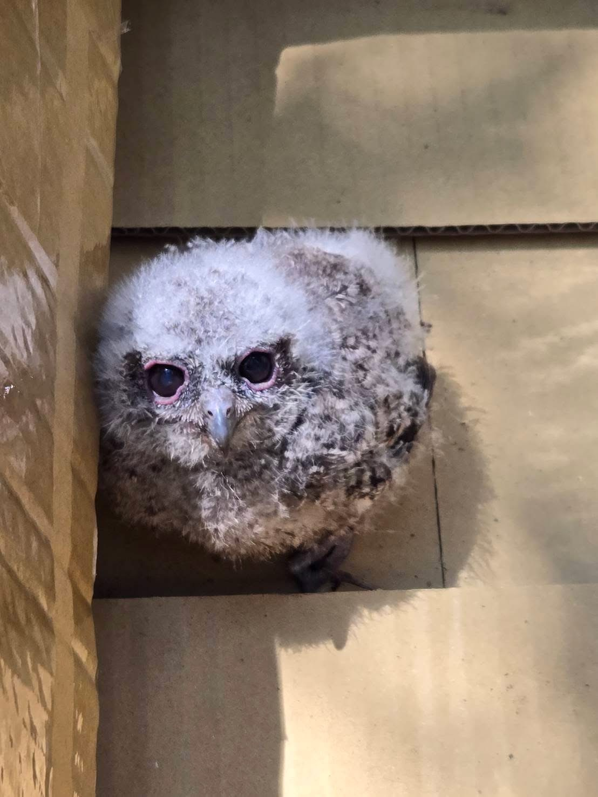
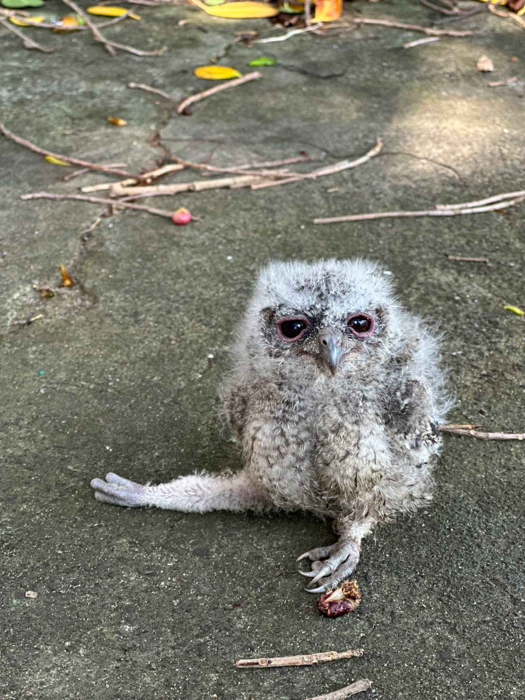

2026 年的春天，新豐國中的巢箱裡同樣誕生了三隻小領角鴞。但大自然從不保證一帆風順。
這裡將發生一場關於殘酷、救援，與奇蹟的真實故事。
01
CHAPTER ONE
33% 的殘酷與美台聯線救援
03.25
一隻幼雛不幸失蹤；另一隻雛鳥的右腳被發現先天無法彎曲——對極度依賴雙爪抓握獵物、站立攀爬的猛禽而言，這是致命缺陷
04.10 中午
這隻令人揪心的小貓頭鷹，在練習展翅時不慎從高處墜地！校園內頓時警鈴大作，一場與時間賽跑的跨國救援悄然展開
救援行動
學校總務處與熱心教師緊急上網尋求野生動物救助單位；愛心無遠弗屆——校內教師遠在美國哈佛的親友，竟跨海線上幫忙聯繫台灣的救傷管道！
後送救治
這隻小寶貝被順利通報，後送至六福村救護站進行醫療照護。人類的即時介入，為牠爭取到了活下去、甚至未來重返藍天的機會

04.10 墜地現場——那雙大眼睛，讓所有人心疼不已

靜靜等待人類伸出援手的小生命
🌏 跨海救援連線示意圖
愛心跨越太平洋，科技縮短了救援的距離。
33
%
野外育雛成功率因這場意外降至 33%（三隻中僅存一隻健在野外）。
但這個數字背後，是人類以最快速度回應生命呼喚的行動——另外那隻，正在救護站等待重返藍天的那一天。
台灣領角鴞屬保育類野生動物，絕對不得私自飼養！
若在校園或路邊發現落巢幼鳥，正確步驟是：
① 拍照記錄 → ② 保持距離觀察是否有親鳥 → ③ 撥打 1999 或通報專業野生動物救傷單位（如本案後送六福村救護站）。
私自飼養野生動物可能觸犯《野生動物保育法》，輕則罰款，重則刑事責任。發現受傷的生命，最好的愛護方式是交給專業的手。
02
CHAPTER TWO
鳥類推理劇！神祕的「第二窩」
大考驗過後，新豐國中的樹梢上出現了溫馨的一幕：4 月 16 日，母鳥帶著野外僅存的最後一隻小貓頭鷹，在綠葉間輕盈跳動，展現出生命的強大韌性。
04.16
母鳥帶著野外僅存的最後一隻小貓頭鷹，在樹梢綠葉間輕盈跳動，生命展現出驚人的韌性
04.28
監測人員點開巢箱畫面，不敢置信地揉了揉眼睛——巢箱裡，居然躺著一顆全新、剛產下的蛋！
這在台灣領角鴞的繁殖紀錄中，是極為罕見的案例
🔬 科學推測：Double Brooding 第二次繁殖衝擊
從 4/16 幼鳥離巢至 4/28 母鳥產下新蛋，中間僅間隔 12 天，正好符合猛禽重新排卵所需的 10∼21 天生理循環。初步推測，由於新豐校園食物來源極度穩定充足，母鳥在體力恢復迅速的情況下，極可能主動發動了「第二次繁殖（Double Brooding）」，以最大化年度繁殖潛力。
母鳥是孤軍奮戰，還是新家庭的誕生？
因為領角鴞外觀極難辨識，目前無法百分之百確認這是否為同一隻母鳥。
透過 WNC 未來更新的「巢外攝影機」，你也可以一起加入觀察！
👂
聽叫聲：觀察母鳥是否有特定的鳴叫頻率，不同個體的叫聲細節有微妙差異
👀
看分工：母鳥已開始孵第二窩，4/16 離巢的大寶還在附近——餵食大寶的重責大任全數落在公鳥肩上！發現大寶幾度現蹤來巢箱找鳥媽媽，這是非常有趣的家庭動態現象
📷
持續觀測：WNC 巢外攝影機即將上線，屆時更多行為細節將被記錄下來，等待公民科學家一起解謎
在墜地後的第 12 天，攝影機畫面裡再次出現了白色的蛋。大自然從不輕言放棄——母鴞用行動告訴我們什麼叫做韌性。
🌳 關於本計畫
本計畫由啟碁科技（WNC）機構處連續兩年自主發起永續行動，贊助新竹在地
11 所學校架設網路攝影機，總共設置 18 個生態巢箱，
透過跨界合作，將科技轉化為守護生物多樣性的公民科學力量。